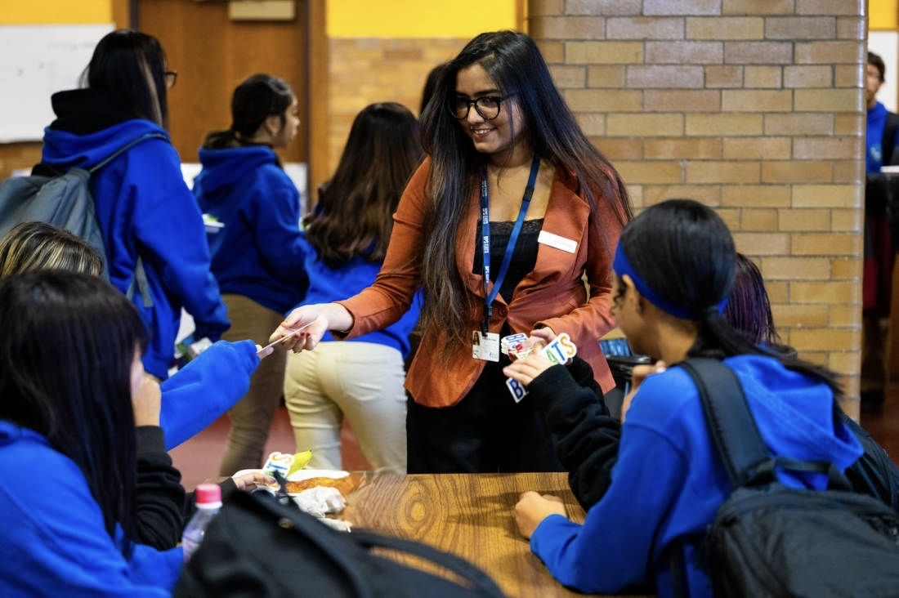

Building the department's first marketing function
The role
I'm the first marketing manager Boston Public Schools' Food & Nutrition Services has ever had. There was no playbook to inherit, so the job started with building one: a comprehensive marketing plan for a department feeding one of the largest school districts in the country.
The challenge
School food has an image problem before anyone tastes it. The department needed a public-facing identity that could change the conversation around what BPS actually serves, at the scale of 125 schools, without an existing account, content library, or process to build from.
The solution
I launched BPS Eats, the department's own social account, and built the content engine behind it: high-quality infographics that make nutrition and sourcing information easy to scan, paired with short-form vertical video that shows the food and the people making it.
Built to last
Every system, template, and workflow is documented on purpose. As I said to Northeastern Global News: I want to build something strong, so that if the team grows or someone comes in after me, they'd have a solid baseline to build on, not a blank page.
Reach
48,000+ meals served daily across 125 schools, with 96% freshly prepared, communicated through an account and content system that didn't exist before this role.
Content strategy
Infographics for the information that needs to be scanned and trusted (sourcing, nutrition, menu changes), and short-form vertical video for the moments that need to be felt: kitchens, staff, and students. Early videos posted to BPS Eats drew 4,000+ views each, without any paid promotion behind them.
Programming highlight
Planned and promoted Global Food Choice Day, a district-wide moment built to spotlight the range and culture behind the menu, using the same infographic-plus-video content model built for the account's everyday posting.
